Video žurnālists. Veidoju sporta un ziņu video: no līdzjutēju zonām un derbijiem līdz intervijām pēc spēlēm.
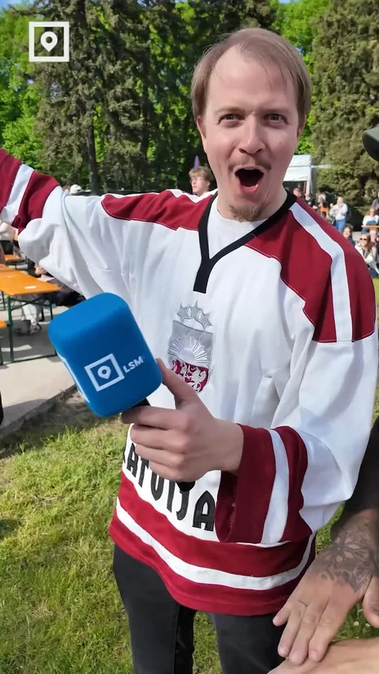
Instagram ↗Kur Rīgā skatīties hokeju
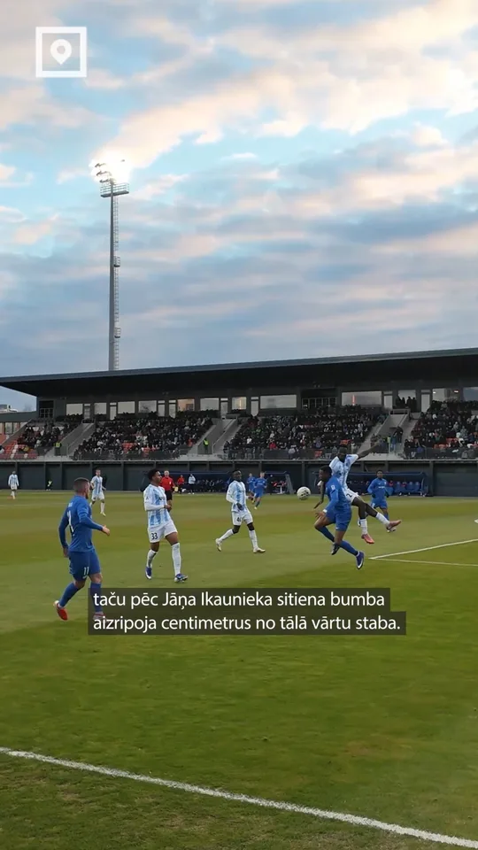
Instagram ↗RFS un “Riga FC” derbijs 3:3
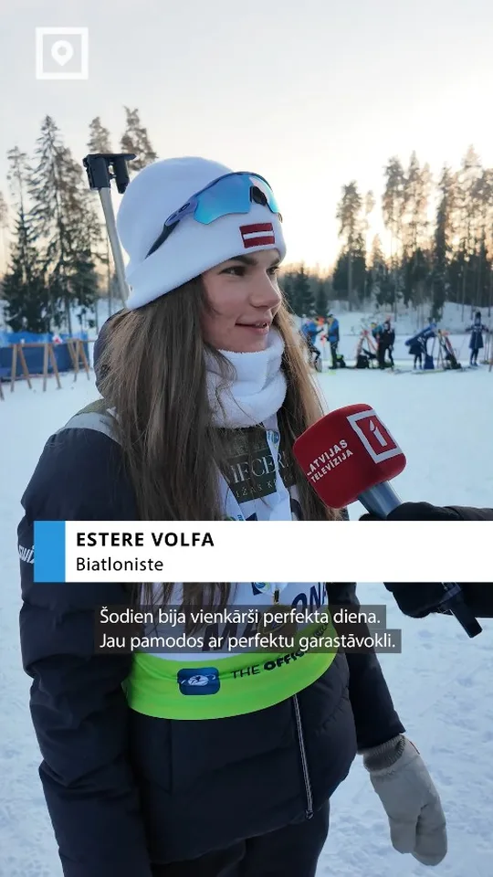
Instagram ↗Junioru Pasaules kauss biatlonā Madonā
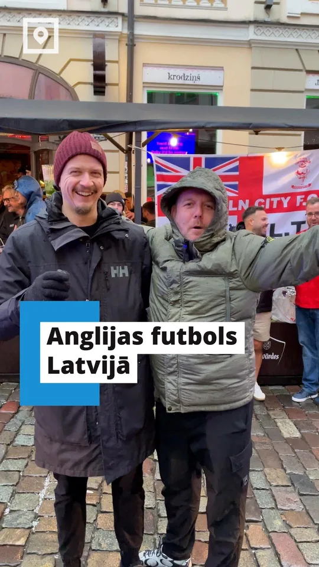
Instagram ↗Anglijas fani Rīgā
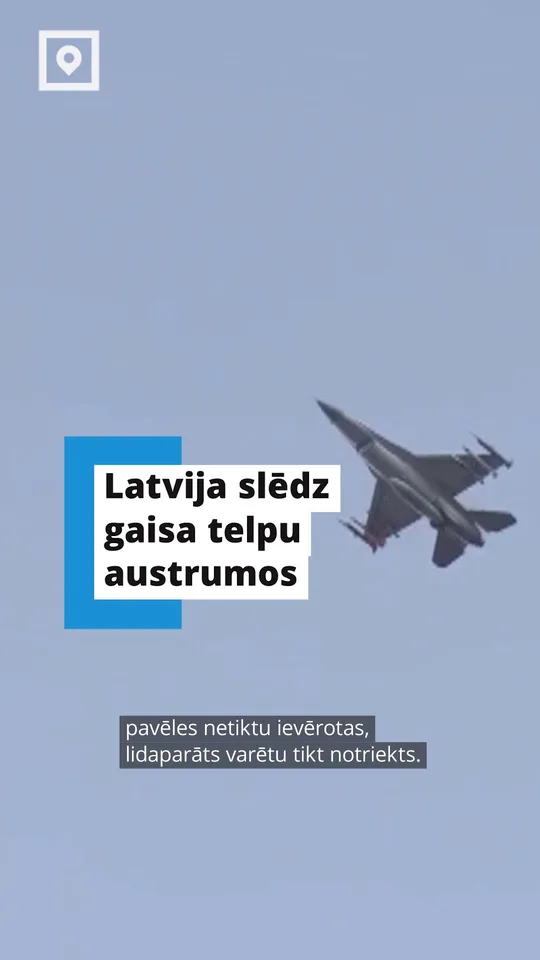
Instagram ↗Latvija slēdz daļu gaisa telpas pie austrumu robežas
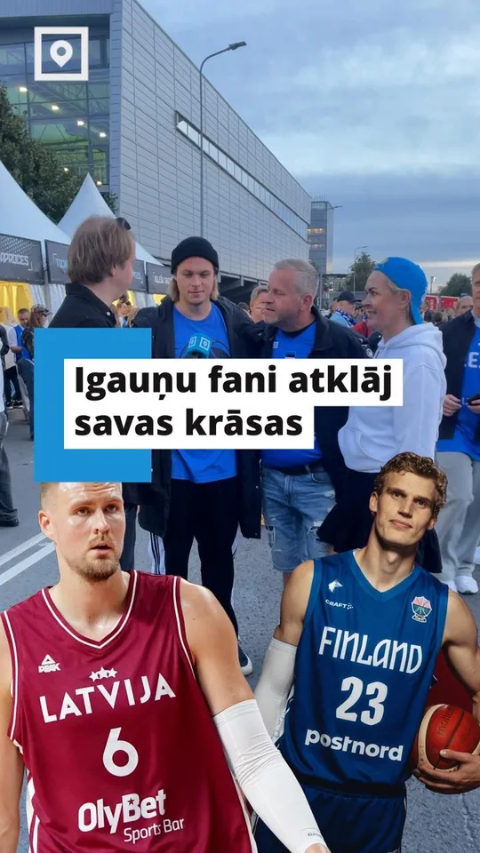
Instagram ↗Latvija pret Igauniju: kurā pusē igauņu fani?
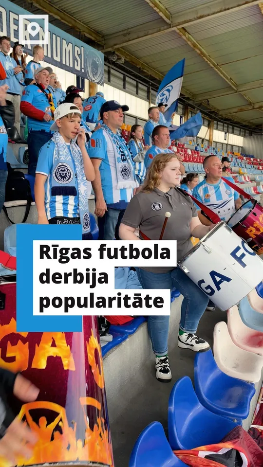
Instagram ↗“LSM Sports viesojas”: Rīgas derbijs
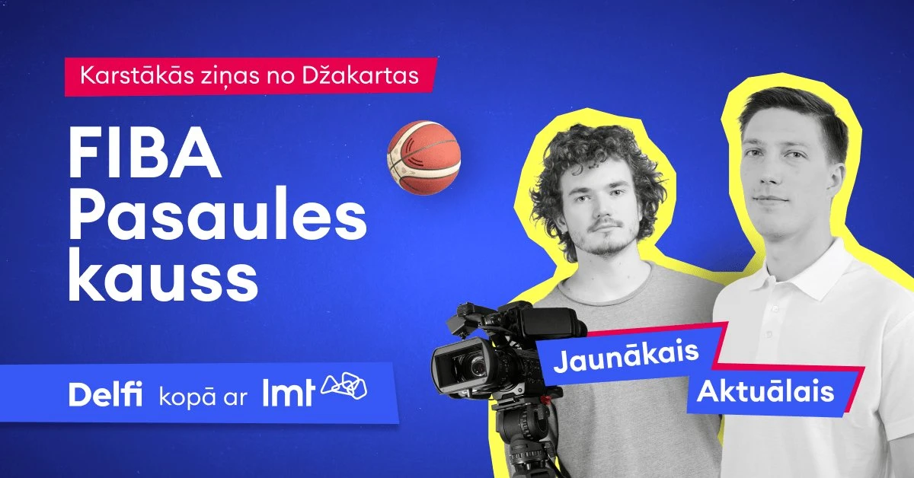
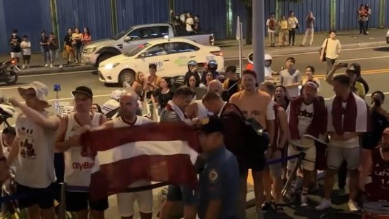
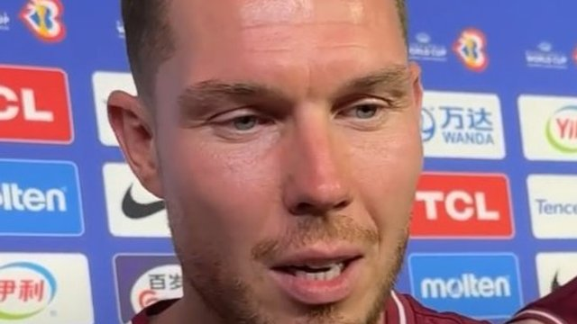
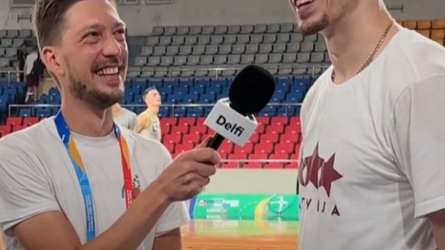
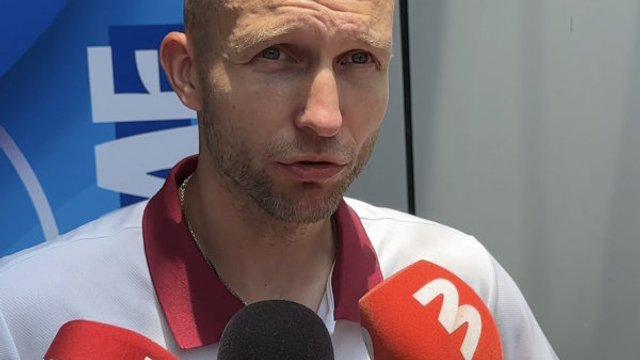
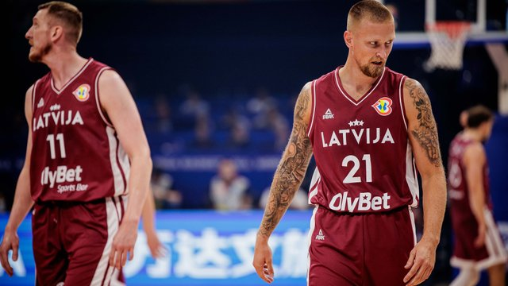
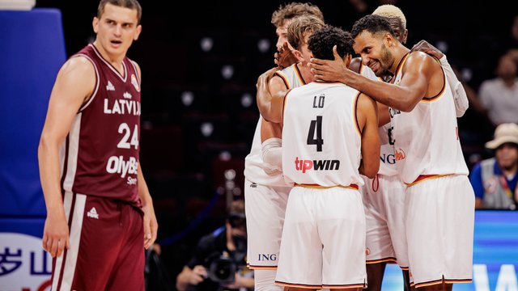
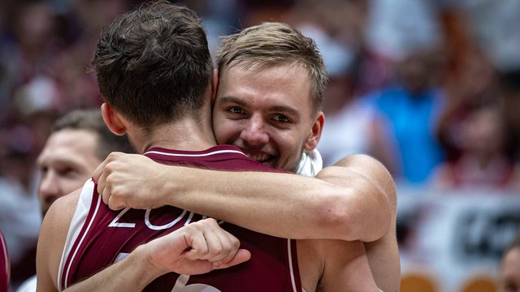
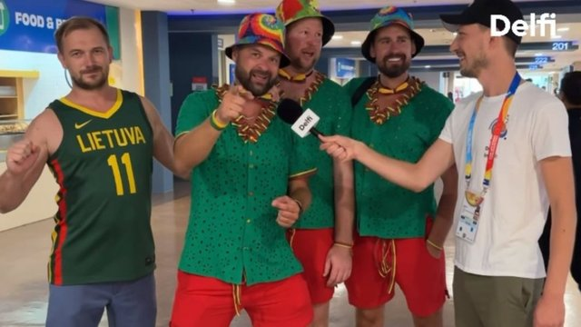
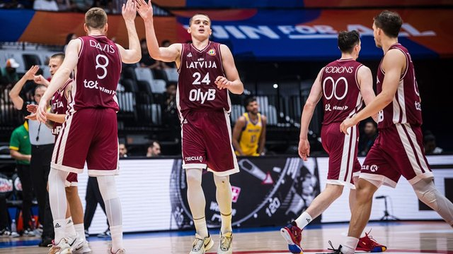
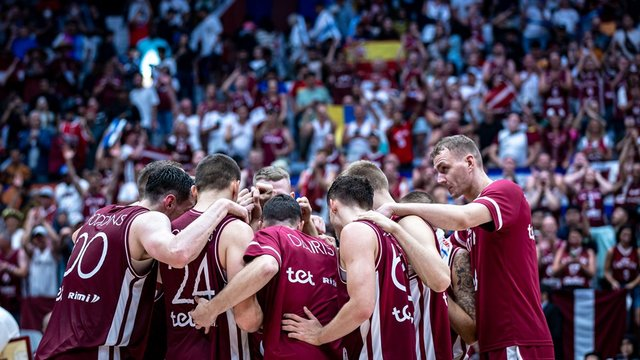
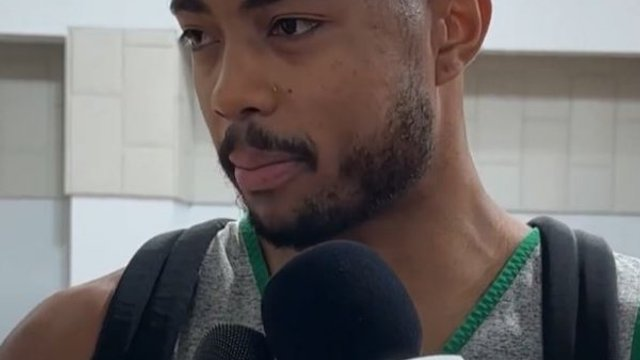
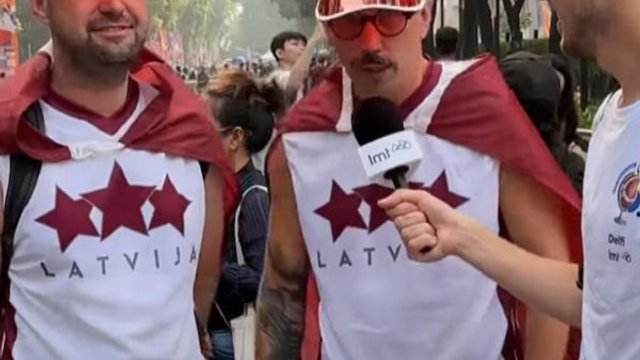
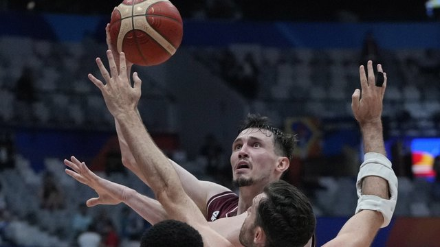
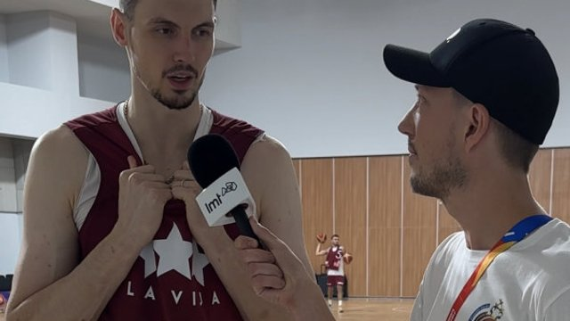
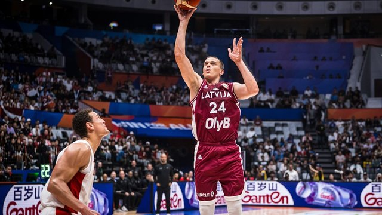
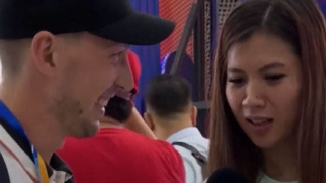
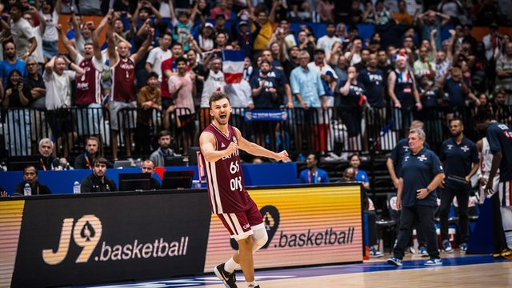
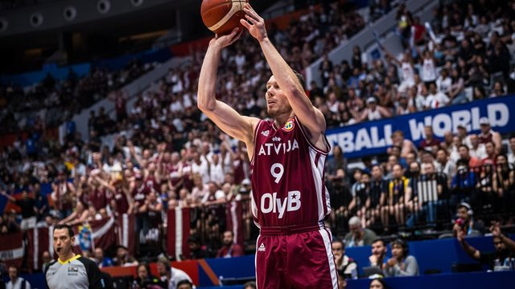
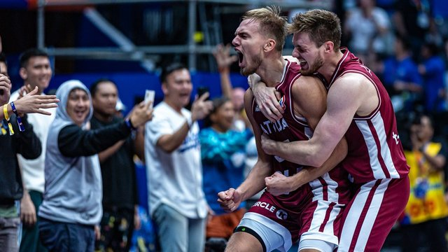
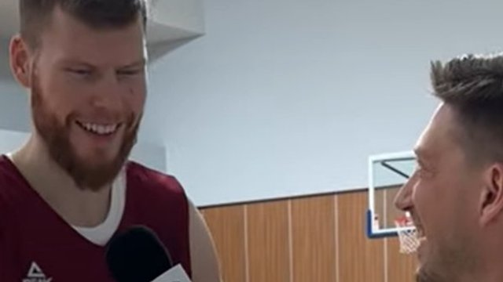
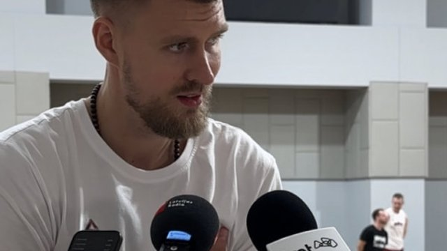
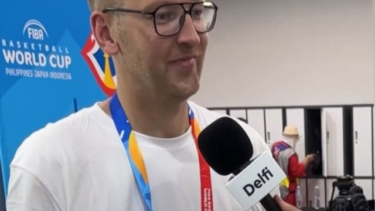
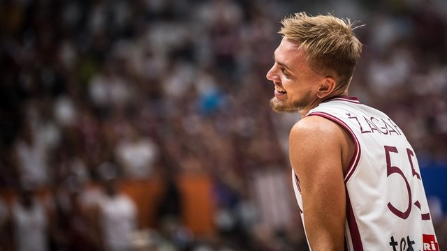
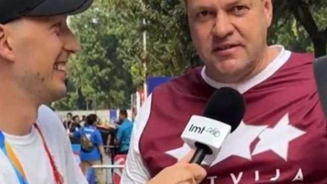
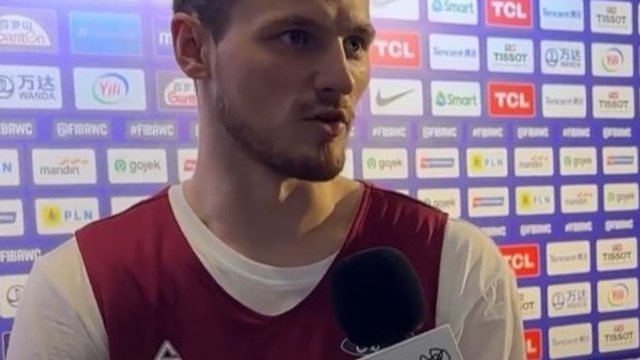
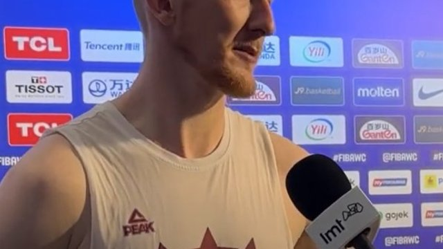